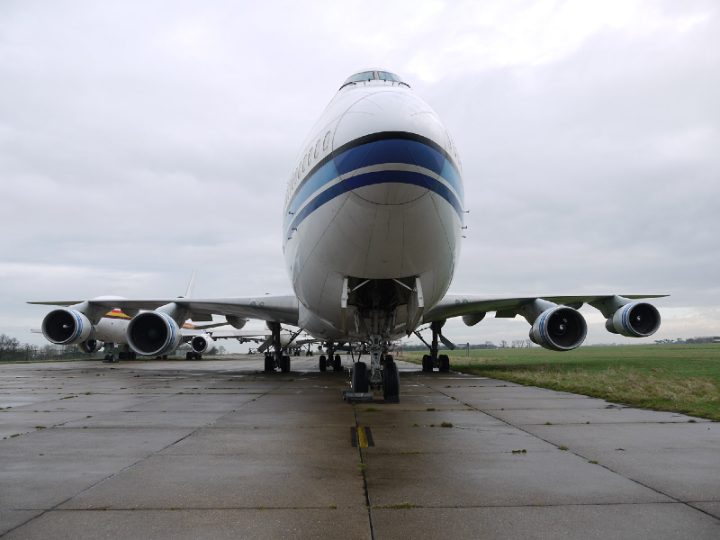
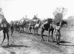

SCP-036

- Item nº:
- SCP-036
- Classe do objeto:
- Safe
Procedimentos Especiais de Contenção:
Uma vez por ano, uma força-tarefa móvel é enviada do Comando de Contenção-02, em [EXPURGADO], ao Site-22A para defender a pista e o aeroporto ali localizados. A instalação civil deve ser esvaziada de todo o pessoal não SCP até as 04h00 de 23 de setembro, e ninguém pode voltar até o nascer do sol do dia seguinte. Em 1º de outubro, todos os civis devem ser evacuados novamente antes do nascer do sol e não terão permissão para entrar no Site-22A até o retorno do "voo da Peregrinação".
Os peregrinos em trânsito do "Voo de Chegada", que aguardam a partida no "Voo da Peregrinação", só podem ser interrogados por pesquisadores com autorização de segurança de Nível 3 ou superior.
Descrição:
O SCP-036 inclui o local, o Site-22A (um pequeno aeroporto na região de Mossul, no norte do Iraque), e o Site-22B (o destino dos passageiros que embarcam no Site-22A). Os principais componentes do SCP-036 são:
- O "Voo de Chegada": um avião de passageiros (que varia de marca e modelo de um ano para o outro) que chega pouco antes do amanhecer de 23 de setembro. Ele aparece no radar a cerca de 30-40 quilômetros do Site-22A. Quando pousa, os "peregrinos" saem do avião e entram no terminal. Nenhum tripulante jamais saiu do avião. As observações revelaram apenas um piloto e um copiloto mascarados. Esse avião parte rapidamente depois que os peregrinos desembarcam e não espera autorização para decolar, nem se identifica na aproximação para o pouso.
- Os "Peregrinos": pessoas da fé yazidi que saem do avião de "Chegada", que se diz estarem passando pelo kiras guhorîn. A cada ano eles são examinados e identificados como diversas pessoas da fé yazidi que morreram durante o ano anterior. Isso é feito por meio de certidões de nascimento, documentos com foto, perguntas de conhecimento específico e, quando possível, impressões digitais. A maioria se mostrou simpática e amigável, embora a maioria relute em dar detalhes sobre o kiras guhorîn. No passado, todos se mostraram incapazes de reconhecer familiares e amigos ou de se lembrar de qualquer informação além do que a memória de curto prazo normalmente permitiria. No fim da tarde de 23 de setembro, a maioria dos peregrinos começa a enfatizar o quanto é importante que sua peregrinação comece. Nesse momento, eles entram em fila no avião do "Voo da Peregrinação" e partem, para nunca mais serem vistos.
- O "Voo da Peregrinação": um avião de passageiros fornecido pelo pessoal da SCP para o transporte dos "peregrinos", tripulado por uma equipe de religiosos yazidi treinados. A tripulação normalmente nunca consegue detalhar a peregrinação nem o que realmente é o kiras guhorîn. O equipamento da SCP a bordo funciona perfeitamente, mas os dados registrados só aumentam um pouco, a cada ano, a nossa compreensão da peregrinação. Embora o voo fique fora por sete dias, a tripulação e os dados registrados só conseguem dar conta de algumas horas. Dias faltam nos equipamentos de registro de tempo e nas câmeras, embora nada anormal seja jamais observado. O avião desaparece do radar e o contato visual é perdido a cerca de 50-60 km do Site-22A, até que ele retorna por volta do nascer do sol de 1º de outubro.
- Site-22B: o destino do "avião da Peregrinação", é um pequeno aeroporto composto de uma pista e de um único prédio, localizado nas coordenadas [EXPURGADO]. Só foi observado pela "tripulação da Peregrinação" e pelas câmeras do avião. Não aparece em imagens de satélite, e as tentativas de chegar a ele a pé fracassaram, uma delas com resultados desastrosos. As câmeras têm dificuldade de focar na área, pois o calor do solo costuma causar um efeito visual semelhante a miragem em todos os objetos a mais de algumas dezenas de metros do avião. Um sobrevoo com um avião de reconhecimento da SCP várias semanas antes da peregrinação revelou terra não desenvolvida e o que parecia ser uma antiga estátua de pedra. Na década de 1990, a Força-Tarefa Móvel Sigma-4 da SCP tentou chegar ao Site-22B durante o período da peregrinação. Na aproximação, a comunicação foi perdida e nunca mais se ouviu falar da força-tarefa. Nenhuma outra tentativa de exploração é aconselhada durante os sete (7) dias da peregrinação.

Originalmente, o povo yazidi de língua curda ao redor de Mossul realizava a Peregrinação em segredo, por conta própria. Os peregrinos vindos do leste eram escoltados por guardas armados e mascarados, em lombo de camelo, aos cuidados de religiosos yazidi. Explicou-se que os religiosos levavam então os peregrinos para o oeste, para a sua "terra dos mortos", onde os peregrinos esperavam para "renascer" no povo yazidi. O kiras guhorîn, literalmente "troca de vestes" em curdo, é usado para descrever a crença na reencarnação por que passam as almas menores dos yazidi. Embora essa peregrinação real fosse feita em segredo, uma peregrinação simbólica e o kiras guhorîn são realizados todos os anos nessa época por outros yazidi.
Durante a década de 1960, a aquisição de terras por curdos e muçulmanos, os ataques de turcos e as leis punitivas do governo islâmico iraquiano restringiram os movimentos e os costumes dos yazidi. Nessa época, a Fundação interveio e ofereceu ajuda na forma de uma cláusula vantajosa que concedia aos aviões da SCP acesso irrestrito às instalações aeroportuárias da região. Quase imediatamente, aviões misteriosos com peregrinos vindos do leste começaram a pousar no aeroporto local, e também surgiu um aeroporto esquivo no destino.